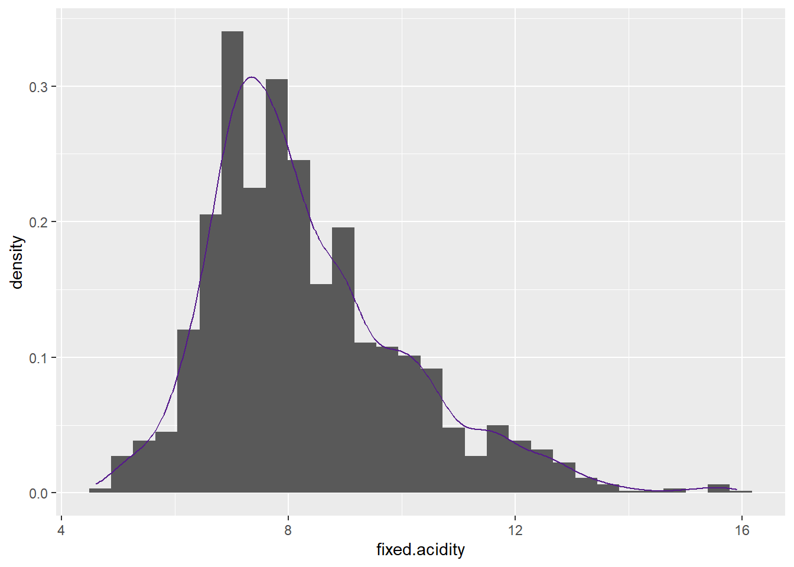
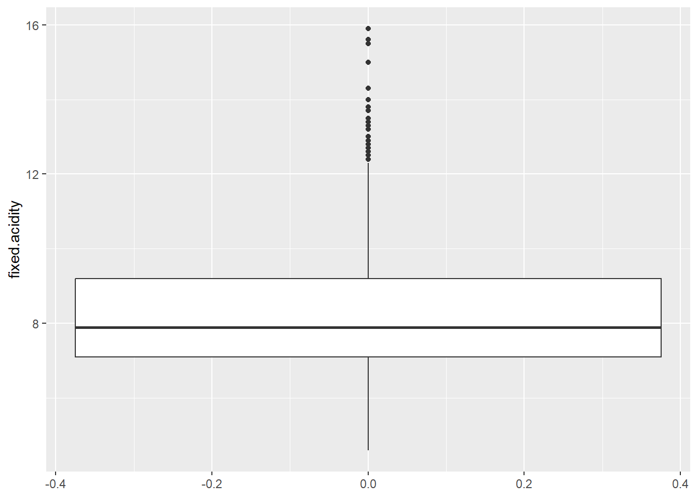

Chapter 3 Analisis de la variable fixed.acidity
## # A tibble: 1 × 9
## n prom ds mediana RIC minimo maximo Q1 Q3
## <int> <dbl> <dbl> <dbl> <dbl> <dbl> <dbl> <dbl> <dbl>
## 1 1599 8.32 1.74 7.9 2.1 4.6 15.9 7.1 9.2La variable fixed acidity, que se refiere a la cantidad de ácidos que no se evaporan fácilmente y que aportan un sabor ácido estable y duradero, fue analizada a partir de 1.599 observaciones. Se obtuvo un promedio de 8,319 g/L (DS = 1,741 g/L), donde El 50% de los valores se encuentran por debajo de 7,9 g/L, mientras que el 25% más bajo está por debajo de 7,1 g/L y el 25% más alto supera los 9,2 g/L, evidenciando una dispersión moderada. El valor mínimo registrado fue de 4,6 g/L y el máximo de 15,9 g/L lo que indica un amplio rango de 11,3 g/L.
3.1 Histograma de fixed.acidity
datos %>%
ggplot(aes(x= fixed.acidity))+
geom_histogram(aes(y=after_stat(density)))+
geom_density(color= 'purple4')## `stat_bin()` using `bins = 30`. Pick better value with `binwidth`.
3.2 Boxplot de fixed.acidity

La distribución de fixed acidity presenta una ligera asimetría positiva, lo que sugiere la presencia de valores de acidez fija inusualmente altos. Este patrón se confirma con el análisis de outliers mediante el rango intercuartílico, que detecta valores extremos superiores a 12,4 g/L. Dichos valores podrían sesgar la media hacia valores mayores.